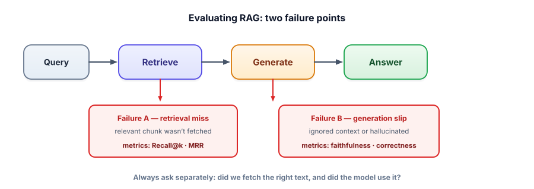

Evaluating retrieval quality
This is the lesson that turns RAG from guesswork into engineering. Without measurement you’re tuning chunk sizes and rerankers by vibes. With it, every change is a number that went up or down — and you finally know whether you’re improving.
Why you must measure, and what to measure
RAG can fail in two distinct places, and confusing them wastes weeks. Either retrieval failed (the right chunk never reached the prompt) or generation failed (the right chunk was there but the model ignored it or hallucinated). The fixes are completely different — better chunking/embeddings/reranking vs better grounding/prompting — so the first job of evaluation is to tell these apart.

A golden set is a small labeled dataset of queries paired with the chunk(s) that should be retrieved (and ideally a correct answer). On it you compute retrieval metrics: recall@k (what fraction of the relevant chunks appeared in the top k? when each query has one relevant chunk this is the same as hit rate@k, "did it appear at all", which is what the harness below computes), precision@k (what fraction of the top k were relevant?), and MRR (mean reciprocal rank — how high up the first relevant chunk was, rewarding good ordering). For the answer you add end-to-end metrics: faithfulness (supported by context?) and answer correctness/relevance.
Grading a treasure hunt team. Recall asks: of the 3 treasures hidden, how many did they bring back? Precision asks: of the 5 things in their bag, how many are treasure and how many are rocks? MRR asks: how many steps until they found the first treasure? nDCG gives more points for treasure found early and for the gold over the silver. The analogy breaks because in a treasure hunt you know where every treasure is; in retrieval your labels are often incomplete, so a "rock" might be an unlabelled treasure.
Play with the metrics
Toggle which retrieved results are actually relevant and watch the metrics move. Build the intuition for what each one rewards.
Retrieval-metrics calculator
Click a result to toggle relevant/not. Set how many relevant chunks exist in total, and the cutoff k.
A dozen labeled queries is enough to start. Compute recall@k and MRR, then change one knob and see if the number moves.
# golden[query] = set of chunk ids that *should* be retrieved
golden = {
"how long is the warranty?": {"warranty#0"},
"can I return it?": {"returns#0"},
"how do I cancel billing?": {"billing#2"},
}
def evaluate(retrieve, golden, k=5):
recall_hits, rr_sum = 0, 0.0
for q, relevant in golden.items():
ranked = retrieve(q, k) # list of chunk ids, best first
if relevant & set(ranked): # did we get a relevant one in top k?
recall_hits += 1
for rank, cid in enumerate(ranked, start=1): # reciprocal rank of first hit
if cid in relevant:
rr_sum += 1.0 / rank
break
n = len(golden)
return {"hit_rate@k": recall_hits / n, "MRR": rr_sum / n}
print(evaluate(my_retriever, golden, k=5)) # {'hit_rate@k': 1.0, 'MRR': 0.83}
# Now change chunk size OR add reranking, re-run, and compare the numbers.This tiny harness is the engine of all RAG improvement: change one variable, re-measure, keep it only if the metric improved. It’s also the seed of Track 6 (Evals), which generalizes this to whole LLM systems.
Assumptions: 2 M chunks, a 400-query golden set labelled by support leads, a judge priced at $2 / $10 per million input / output tokens (Anthropic models overview, checked 2026-11-03).
- One query by hand. Relevant chunks {A, B, C}. Top 5 returned: [X, A, Y, B, Z].
- recall@5 = 2/3 = 0.667; precision@5 = 2/5 = 0.40; hit@5 = 1.
- Reciprocal rank = 1/2 = 0.5 (first relevant at rank 2).
- nDCG@5 (binary gains, log2 discount): DCG = 1/log2(3) + 1/log2(5) = 0.631 + 0.431 = 1.062. Ideal DCG (A, B, C at ranks 1-3) = 1 + 0.631 + 0.5 = 2.131. nDCG = 1.062 / 2.131 = 0.498.
- Context precision as Ragas defines it (mean of precision@k at each relevant rank, Ragas context precision docs): (P@2 + P@4) / 2 = (0.5 + 0.5) / 2 = 0.50.
- Average over 400 queries. Say recall@10 = 0.85. Standard error = sqrt(0.85 x 0.15 / 400) = 0.0179, so the 95% interval is about 0.85 plus or minus 0.035. A change to 0.87 is inside the noise.
- How many queries for plus or minus 1 point? n = 1.962 x 0.1275 / 0.012 = about 4,900. You rarely need that: compare old and new on the same queries (a paired test) and only the queries that flipped carry signal.
- Labelling cost. At about 3 minutes per query, 400 queries is 20 hours of expert time. Budget it like any other dataset.
- Generation side. Faithfulness judging per run: 400 x 3,500 input tokens = 1.4 M x $2 = $2.80, plus 400 x 200 output = 80,000 x $10 / 1 M = $0.80. About $3.60, cheap enough to run on every pull request.
- RAG fails at retrieval or generation — measure them separately, they have different fixes.
- A small golden set (queries → relevant chunks) unlocks real numbers; you don’t need thousands.
- Recall@k = did we fetch it; precision@k = how clean the top-k is; MRR = how high the first hit ranked.
- Add faithfulness and answer correctness for end-to-end quality.
- The loop: change one knob → re-measure → keep or revert. That’s how RAG actually improves.
Your golden-set evaluation shows recall@10 = 0.95 but faithfulness = 0.55. Where is the problem, and what do you fix?
Recall@5 is 0.95 but users get wrong answers. Where's the fault most likely?
Two retrievers return the same 3 relevant chunks in the top 10. Retriever P puts them at ranks 1, 2, 3; retriever Q at ranks 1, 8, 9. Which metric tells them apart?
A team cuts retrieved chunks from 10 to 2. Context precision rises from 0.61 to 0.83 and faithfulness holds at 0.90, yet users say answers are now incomplete. Which metric should have warned them?
1. Recall@5 is 0.98 but MRR is 0.30. What does that combination tell you, and what would you add?
2. How would you build a golden set quickly for a new internal-docs RAG, without a labeling team?
3. You improve chunk overlap and recall@5 goes from 0.80 → 0.91, but answer correctness is unchanged. What might be happening?
▸ Show solutions & reasoning
1. High recall but low MRR means the relevant chunk is almost always retrieved but ranked low in the top 5 — so if you only feed the model the top 1–2, it often misses it. The fix is a reranker (Lesson 3.5) to push the relevant chunk to the top, raising MRR. Recall and MRR together tell you “found it” vs “found it and ranked it well.”
2. Bootstrap it: take real user questions (or have an LLM generate plausible questions from each document), and label the obviously-correct chunk for each — even 20–50 pairs is enough to start measuring. You can also use an LLM to draft candidate (query, relevant-chunk) pairs and then spend a little human time verifying them. A small, honest golden set beats a large unmeasured guess.
3. Likely the generation step is now the bottleneck: you’re retrieving the right chunk more often (recall up), but the model isn’t turning that into a better answer — pointing at grounding/prompting or answer-extraction issues, not retrieval. This is exactly why you measure retrieval and end-to-end correctness separately: improving one stage only helps if it was the limiting one. Time to look at faithfulness and the prompt.
The teams that ship great RAG aren’t smarter about embeddings — they have a faster measurement loop. The flywheel: collect real queries (and failures) from production, fold the tricky ones into your golden set, then for every proposed change — new chunker, different embedding model, added reranker, hybrid search, prompt tweak — run the same evaluation and accept only changes that move the metric. Because you measure retrieval and generation separately, you always know which knob to turn. This converts an intimidating space of options into a disciplined, almost boring, optimization.
Two practical notes. For the generation side, exact-match scoring is too brittle for free-text answers, so faithfulness and correctness are increasingly judged by an LLM-as-judge — a model scoring whether the answer is supported and correct given the context. That technique (and its pitfalls) is the heart of Track 6, and frameworks like Ragas package these RAG metrics for you. And beware of evaluating on your training examples: keep a held-out set the system was never tuned on, or you’ll fool yourself with numbers that don’t generalize. Measurement is only useful if it’s honest.
You’ve built RAG end to end and learned to measure it. Time to pressure-test the whole track the way an interviewer would. On to the Track 3 interview check.
labs/06_evals.pyFree and offline once set up: Ollama with qwen2.5:7b, plus the packages in labs/README.md. From the course folder:
python labs/06_evals.pyWhat to look for: The lab computes recall@3, MRR and nDCG@3 on 10 answerable golden questions, an LLM-judge agreement count, and a per-case regression gate between two prompts. Check one query by hand with the formulas above. Then change k from 3 to 1 in metrics() and watch recall@k fall while MRR stays the same (MRR only cares about the first hit). Finally, remove one gold doc id: a correct chunk now counts as a miss, which shows how incomplete labels pull every metric down. With 12 cases, every number has a wide interval (section 6 prints it).
Small samples: these labs use 5 to 20 cases so they run in minutes on a laptop. Where they report a rate, they print n and a 95% Wilson interval. Read them as a demonstration of the mechanism, not as a measured rate for your system; for that you need hundreds of cases and several seeds.
▸ Recorded output (our run, 2026-11-03, qwen2.5:7b on a laptop GPU)
5) Judge position bias: same pair, swapped order
How long do card refunds take? order1 picked B, order2 picked B -> FLIPPED
Return window for electronics? order1 picked B, order2 picked A -> consistent
Express shipping price? order1 picked B, order2 picked A -> consistent
When is standard shipping free? order1 picked A, order2 picked B -> consistent
Duplicate charge reversal time? order1 picked A, order2 picked B -> consistent
consistent verdicts: 4/5 = 80% (95% CI 38%-96%) correct in both orders: 2/5 = 40% (95% CI 12%-77%)
n=5 pairs is a demo, not a measurement of this judge's bias: the intervals span most of 0-100%.
Look: with no reference passage in the judge prompt, the judge has to guess which number is right.
Always judge both orders and count a win only when both agree; give the judge the reference.
6) How wide is the error bar on 12 cases?
v1 accuracy 11/12 = 92% (95% CI 65%-99%) (Wilson interval)
At n=400 the same accuracy would be roughly +/- 2.7%
{"v1_correct": 0.917, "regressions": 12, "judge_consistent": 4}Your numbers will differ a little run to run. Full log: labs/outputs. Source: labs/06_evals.py.
Warm-up. Relevant chunks {B, D}. Ranked top 5: [B, X, Y, D, Z]. Compute recall@5, precision@5, reciprocal rank, nDCG@5 (binary) and Ragas-style context precision.
▸ Solution
recall@5 = 2/2 = 1.0. precision@5 = 2/5 = 0.4. RR = 1/1 = 1.0. DCG = 1/log2(2) + 1/log2(5) = 1 + 0.431 = 1.431. Ideal DCG with B and D at ranks 1-2 = 1 + 1/log2(3) = 1 + 0.631 = 1.631. nDCG@5 = 1.431 / 1.631 = 0.877. Context precision = mean of precision@k at relevant ranks = (P@1 + P@4) / 2 = (1.0 + 0.5) / 2 = 0.75. Notice recall and MRR are perfect but nDCG and context precision are not, because D sits at rank 4 behind two irrelevant chunks.
Transfer. Your RAG report reads: context recall 0.92, context precision 0.41, faithfulness 0.88, answer relevance 0.62. Diagnose and name the first two fixes.
▸ Solution
Context recall 0.92: the needed facts usually reach the prompt, so retrieval coverage is fine. Context precision 0.41: they are buried among irrelevant chunks, often ranked below them. Faithfulness 0.88: the model mostly sticks to the context. Answer relevance 0.62: answers drift or pad, which fits a noisy context, since the model talks about the irrelevant chunks too. Fix 1: add a reranker and keep fewer chunks, which should lift context precision without hurting recall (check that it does). Fix 2: tighten the prompt to answer the question directly and briefly, and re-measure answer relevance. Leave the embedder alone; recall says it is not the problem.
Stretch. For each metric, name one way it can look good while the system is bad, and the guard you add: recall@k, MRR, nDCG, context precision, context recall, faithfulness, answer relevance.
▸ Solution
- recall@k: high at k = 50 while the prompt only gets 5. Guard: report recall at the k you actually feed the model.
- MRR: perfect when the first hit is at rank 1 even if the other needed chunks are missing. Guard: pair with recall or nDCG for multi-fact questions.
- nDCG: computed against incomplete labels, so a relevant but unlabelled chunk counts as a miss, and the ideal ranking only knows the labelled items. Guard: pool top results from several systems and label them.
- context precision: rises by returning fewer chunks. Guard: always read it next to context recall.
- context recall (Ragas): needs a reference answer and an LLM to attribute its claims, so a wrong reference or a sloppy judge corrupts it. Guard: spot-check attributions by hand.
- faithfulness: an answer that says little, or copies context verbatim, scores high, and a refusal has no claims at all, so depending on the implementation it is undefined or trivially perfect. Guard: track abstention rate and answer correctness separately.
- answer relevance: Ragas scores it by generating questions from the answer and comparing their embeddings to the user question, and its docs state it does not evaluate factual accuracy. An answer that restates the question scores well. Guard: pair it with faithfulness and correctness.
Junior Explain recall@k, precision@k and MRR in one sentence each, and when each matters.
▸ Model answer
Recall@k is the fraction of the relevant chunks that appear in the top k; it matters when the model needs every piece of evidence. Precision@k is the fraction of the top k that are relevant; it matters because irrelevant chunks cost tokens and distract the model. MRR is the average of 1 over the rank of the first relevant result; it matters when you mostly need one good chunk near the top, as in single-fact FAQ answers. I report them at the k that actually goes into the prompt.
Mid What is nDCG and when would you use it over MRR?
▸ Model answer
nDCG sums the relevance of each result divided by log2(rank + 1), so results lower down count less, then divides by the best possible score for that query so it lands between 0 and 1. Unlike MRR, it counts every relevant result, not just the first, and it supports graded relevance, for example 2 for the exact answer and 1 for useful background. I use it when questions need several chunks, when I have graded labels, or when comparing rerankers, since they change the order of all candidates. BEIR uses nDCG@10 as its headline metric for that reason.
Senior Design the evaluation for a production RAG system, including the generation side. What are the failure modes of the metrics themselves?
▸ Model answer
Two layers. Retrieval: a labelled golden set from real queries, recall@k and nDCG@k at the k fed to the model, sliced by query type. Generation: the Ragas set, which are faithfulness, answer relevance, and context precision and recall, plus answer correctness against references for a subset. The Ragas paper (arXiv 2309.15217) shows these can run without human labels, but they are only as good as the judge, so I calibrate the judge against 50 to 100 human labels and pin the judge model and prompt. Known failure modes: incomplete labels deflate retrieval metrics; context precision games itself by returning less; faithfulness rewards saying nothing; answer relevance ignores correctness; and judges carry position, verbosity and self-preference biases. I report confidence intervals and compare versions on the same queries.